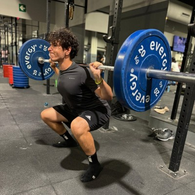

Reducir grasa corporal
Combinar entrenamiento y educación alimentaria para trabajar tu composición corporal con hábitos que puedas mantener.
Entrenamiento personal y educación alimentaria para profesionales con poco tiempo. Mejora tu composición corporal, gana fuerza y construye una mejor condición física para afrontar las jornadas largas, moverte más y no dejar tu salud en pausa. Un plan individual de 90 días, con seguimiento y ajustes que se adaptan a tu agenda. Presencial en Madrid con ECAMO Hybrid o a distancia con ECAMO Online.
QUIERO EMPEZAR¿Buscas un entrenador a distancia? Conoce el entrenamiento personal online. ¿Prefieres sesiones presenciales? Descubre ECAMO Hybrid en Madrid.
El objetivo no es entrenar por entrenar. Es mejorar tu físico y desarrollar recursos para moverte mejor, afrontar las exigencias de tu jornada y seguir teniendo energía para tu vida fuera del trabajo.
Combinar entrenamiento y educación alimentaria para trabajar tu composición corporal con hábitos que puedas mantener.
Seguir una progresión individual para levantar más, mejorar tu capacidad física y construir un cuerpo más fuerte.
Desarrollar resistencia y capacidad para que las actividades del día a día te resulten más llevaderas.
Dejar atrás el ciclo de empezar y abandonar con una estructura que pueda adaptarse a semanas reales.
El entrenamiento no sustituye las pausas ni los cambios ergonómicos, pero puede ayudarte a desarrollar fuerza, movilidad y capacidad física para contrarrestar una rutina demasiado sedentaria.
Trabajamos fuerza, movilidad y hábitos de movimiento para que pasar muchas horas frente al ordenador no sea toda tu actividad diaria.
Desarrolla una base de fuerza y resistencia que te ayude con las demandas físicas cotidianas y te deje recursos para tu tiempo personal.
Planificamos alrededor de reuniones, desplazamientos y semanas exigentes para que cuidarte no dependa de encontrar una semana perfecta.
Si tienes dolor persistente o una lesión, es importante contar con la valoración del profesional sanitario correspondiente. El entrenamiento se adapta a las indicaciones y a tu situación.
Los objetivos y el ritmo de progreso se individualizan. No se garantizan kilos perdidos ni resultados físicos concretos.
Primero definimos qué quieres cambiar: perder grasa, ganar fuerza, mejorar tu condición física o recuperar la constancia. Después convertimos ese objetivo en un plan, medimos tu punto de partida y ajustamos el trabajo según tu evolución. Esa es la función del Método ECAMO.
Definimos un objetivo principal y objetivos secundarios. Por ejemplo: mejorar medidas de composición corporal, aumentar cargas o repeticiones, completar más actividad semanal o recuperar hábitos que habías perdido. Elegimos indicadores útiles para tu caso.
Conocer tu punto de partida, tus hábitos, tu condición física y qué necesitas mejorar.
Diseñar un entrenamiento y unas pautas de hábitos orientadas a tu objetivo.
Ajustar frecuencia, volumen y estrategia cuando cambian tu agenda o tu recuperación.
Revisar indicadores como medidas, rendimiento, adherencia y sensaciones, según tu objetivo.
Consolidar lo que funciona y decidir el siguiente paso para seguir progresando.
El objetivo no es solo entrenar más.
Es notar el cambio y poder mantenerlo.
Tanto si quieres perder grasa, ganar fuerza o recuperar tu condición física, tendrás un plan individual y un seguimiento adaptado a tu punto de partida. Elige el nivel de acompañamiento que mejor encaje contigo.
Mejora tu físico y tu fuerza con acompañamiento online.
Trabaja para reducir grasa, ganar fuerza y mejorar tu condición física desde donde estés. Recibirás una programación individual, revisión de técnica mediante vídeos y ajustes semanales para que sepas qué hacer y cómo progresar. La planificación tendrá en cuenta tus horarios, días de oficina, desplazamientos y semanas con más carga de trabajo.
Más supervisión para avanzar con seguridad y confianza.
Combina la planificación online con seis sesiones presenciales individuales de 60 minutos cada una, a domicilio en Madrid y distribuidas a lo largo de los 90 días. Es la opción para quien quiere trabajar su físico y su condición con supervisión directa de la técnica, resolver dudas en persona y mantener el rumbo con seguimiento entre sesiones, sin que las semanas de trabajo más exigentes desorganicen todo el proceso.
La modalidad cambia. El sistema no.
Con un plan bien ajustado puedes trabajar cambios que van más allá de una sesión de gimnasio: mejorar tu composición corporal, sentirte más fuerte, recuperar capacidad física y volver a tener una rutina que no dependa de estar siempre motivado. El punto de partida y el ritmo serán distintos para cada persona.
Desarrollar tu capacidad física para afrontar el trabajo, el ocio y las actividades cotidianas con mejores sensaciones.
Trabajar la pérdida de grasa y la ganancia de masa muscular con entrenamiento y hábitos alimentarios sostenibles.
Mantener la continuidad con ajustes realistas, sin convertir una semana complicada en abandonar el objetivo.
Integrar el entrenamiento y los hábitos en tu agenda para que puedas sostenerlos más allá de las primeras semanas.
Para personas con agendas exigentes, muchas horas sentadas y poco margen para improvisar. Si quieres perder grasa, ganar fuerza, moverte con más soltura y recuperar tu condición física sin descuidar tu carrera ni tu vida personal, partimos de tu situación real y construimos un proceso sostenible.

Soy Naim Gutiérrez, entrenador personal y Técnico Superior en Dietética, con tres años de experiencia como entrenador personal. Trabajo con personas que tienen agendas exigentes, pasan muchas horas sentadas o disponen de poco tiempo, y quieren perder grasa, ganar fuerza y mejorar su condición física. Les ayudo a conseguirlo mediante un entrenamiento adaptado a sus necesidades y una educación alimentaria práctica, compatible con su vida laboral y personal.
Durante los 90 días seguiremos una estructura definida, pero flexible: primero conoceremos tu punto de partida, después construiremos un plan adaptado a tu agenda y, semana a semana, lo revisaremos para que evolucione contigo.
Empezamos con una conversación para conocer qué quieres conseguir, tu experiencia, los intentos anteriores, tus horarios, tu actividad diaria y los factores que pueden influir en el proceso. Revisamos tu punto de partida con indicadores relacionados con tu objetivo: composición corporal cuando proceda, fuerza, condición física y hábitos. Con esa información definimos prioridades y objetivos realistas.
Con la valoración diseño tu planificación: frecuencia, sesiones, ejercicios, volumen, intensidad y progresión, teniendo en cuenta el tiempo del que dispones y el material al que tienes acceso. También establecemos pautas alimentarias prácticas y cambios de hábitos que puedas mantener. El plan tendrá una dirección clara y alternativas para adaptarse a semanas de más trabajo o menos disponibilidad.
Cada semana revisamos cómo has llevado el plan, qué sesiones has podido completar, cómo te has encontrado y qué dificultades han aparecido. Cada cuatro semanas valoramos de nuevo los indicadores acordados y comparamos la evolución con el inicio. Si algo no funciona o tu situación cambia, ajustamos el entrenamiento y las pautas. Al terminar los 90 días revisamos los avances y definimos los siguientes pasos.
El progreso se valora combinando datos y sensaciones, no solo el peso. Los indicadores se eligen según cada persona y objetivo; cada evolución es individual y los resultados no se pueden garantizar.
Antes de empezar, podrás conocer cómo trabajaremos tu objetivo, qué incluye cada modalidad y cómo revisaremos tu progreso.
No partimos de la idea de que te falte disciplina. Revisamos qué te ha hecho perder continuidad —horarios, volumen de entrenamiento, expectativas o falta de seguimiento— y diseñamos un proceso que puedas sostener. Si una semana se complica, revisamos el plan en vez de tratarlo como un fracaso.
Depende de tu punto de partida, objetivo y disponibilidad. En la valoración inicial definimos una frecuencia realista y te explico qué implicaría cada modalidad. No necesitas entrenar cinco días por semana por sistema ni reservar tiempo que no tienes.
La planificación contempla que tu agenda puede cambiar. Ajustaremos sesiones, volumen o alternativas según las condiciones acordadas para tu programa. La flexibilidad tiene límites prácticos, que concretaremos antes de empezar; no necesitas una semana perfecta para seguir avanzando.
Una rutina gratuita puede ser suficiente para algunas personas. El valor del acompañamiento está en la evaluación individual, la planificación adaptada, el seguimiento, la revisión de técnica y los ajustes basados en tu evolución. En la valoración veremos si realmente necesitas ese nivel de apoyo.
El programa incluye una revisión semanal del proceso y la posibilidad de enviar vídeos para revisar la ejecución, según la modalidad contratada. Los canales de contacto, los plazos habituales de respuesta y la frecuencia de revisión se detallarán en la propuesta antes de contratar. El seguimiento no es un servicio de urgencias ni de atención inmediata.
No necesariamente. Si la composición corporal forma parte de tu objetivo, trabajaremos estrategias nutricionales realistas y educación alimentaria adaptadas a tus hábitos. El enfoque concreto dependerá de tus necesidades y de lo que sea sostenible para ti.
Puedes empezar desde tu nivel actual. La valoración sirve para conocer tu experiencia, tus preferencias, disponibilidad y cualquier limitación relevante antes de diseñar el plan. No necesitas estar en forma para empezar un proceso de entrenamiento.
Podemos adaptar el ejercicio dentro de nuestro ámbito profesional, pero el entrenamiento personal no sustituye la valoración ni el tratamiento sanitario. Si los síntomas lo requieren, te recomendaré consultar con un médico o fisioterapeuta antes de continuar.
ECAMO Hybrid incluye seis sesiones presenciales individuales de 60 minutos cada una durante los 90 días del programa. Las fechas y horarios se acuerdan previamente, según disponibilidad, y el servicio se presta en las zonas de Madrid confirmadas antes de contratar.
Para cambiar o cancelar una sesión presencial, deberás avisar con al menos 24 horas de antelación. La nueva fecha se acordará según la disponibilidad y dentro del periodo de vigencia del programa. Las condiciones aplicables a las sesiones canceladas con menos de 24 horas o a las ausencias se detallarán por escrito antes de contratar. Esta política de citas es independiente de los derechos legales de desistimiento que puedan corresponder en una contratación a distancia.
Antes de abrir la contratación recibirás por escrito la información aplicable sobre el derecho de desistimiento, sus plazos, excepciones y procedimiento. La política de aviso de 24 horas para cambiar o cancelar una sesión es independiente de los derechos legales que puedan corresponderte.
La web está en fase de preapertura informativa. Puedes consultar las modalidades, pero todavía no se formalizan contrataciones, reservas ni pagos. Cuando se abra la contratación recibirás una propuesta escrita con precio final, duración, servicios incluidos, forma de pago, seguimiento y condiciones. Podrás revisarla y resolver tus dudas antes de decidir.